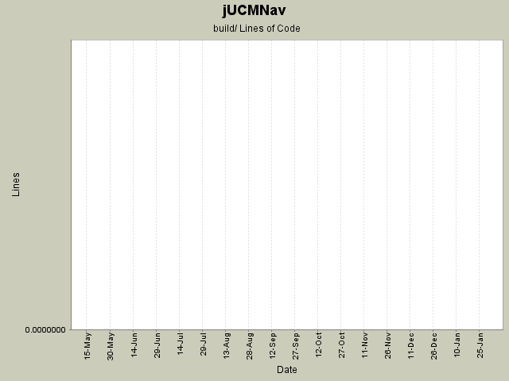

Summary Period: 2005-05-10 to 2006-02-03
[root]/build

Total Lines Of Code:
0 (2006-03-31 18:01)
| Author | Changes | Lines of Code | Lines per Change |
|---|---|---|---|
| Totals | 6 (100.0%) | 0 (-) | 0.0 |
| jpdaigle | 5 (83.3%) | 0 (-) | 0.0 |
| jkealey | 1 (16.7%) | 0 (-) | 0.0 |
removed old cvsignore file.
0 lines of code changed in:
Initial update site scripts. Almost work.
0 lines of code changed in:
JP: Started laying down the structure for a query processing framework.
Intent: process queries about the model / explore graphs / etc.
DO NOT USE RIGHT NOW - Public interface will change - I drank almost an entire
bottle of Beaujolais so I'm drunk. Restating: PUBLIC INTERFACE WILL CHANGE - wait for
jpdaigle to declare interface stable before modifying or referencing.
0 lines of code changed in:
Ignoring output jar
0 lines of code changed in:
Woops, removing file
0 lines of code changed in:
+ OrFork creation support in the palette
+ Very Buggy And / Or fork saving
+ A few various bugfixes
+ Multipage editor support for forks
0 lines of code changed in:
Generated by StatCVS 0.2.4